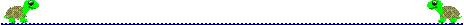

PENUPThis command will cause the turtle to pick up its “pen” so you
can move the
turtle without drawing a line.

PENDOWN This command is used to put the
“pen” back down so you can draw
again.
SETPENCOLORFollow this command with a number.You can change the color of the turtle’s “pen” depending on the number you choose.The example below will
make your turtle draw in hot pink!
SETPENCOLOR 5
CLEANThis command will erase the canvas
(another name for the screen)
HOMEThis command will move the turtle back to the center of the canvas